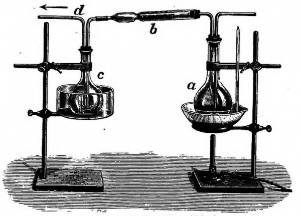

Hello!
let's study about Formaldehyde or usually called Formalin
synthesis formaldehyde by methanal
A flask a, which contains about 50 ml of methyl alcohol is stoppered with two holes stopper. Through one hole a glass tube reaches the bottom of the flask with methanol and through the second a bent glass tube connects the flask with the short combustion tube b. Combustion tube b contains in the center a loose plug of platinized asbestos, which is kept in position by a short roll of copper gauze (how to prepared catalyst is already described in the post – preparation of platinized asbestos). The open end of combustion tube b is attached, by a bent tube dipping to the bottom of the flask c, which is cooled in ice-water. A second tube d, which terminates below the stopper is joined to a water-jet aspirator.  The flask a, containing methanol, is warmed to about 40° C, and a rapid current of air aspirated through the apparatus. The platinized asbestos is then heated until it begins to glow, after which the glowing will continue so long as the air current is sufficiently rapid for the oxidation of methanol to formaldehyde. The liquid which condenses in the flask c is a strong solution of formaldehyde in methanol. Paraformaldehyde is prepared by evaporating formaldehyde solutions in the presence of a little concentrated sulfuric acid. The crystalline mass is filtered washed with water and dried. Paraformaldehyde is a white, crystalline powder.
Formaldehyde by Qaulan Tsaqila.